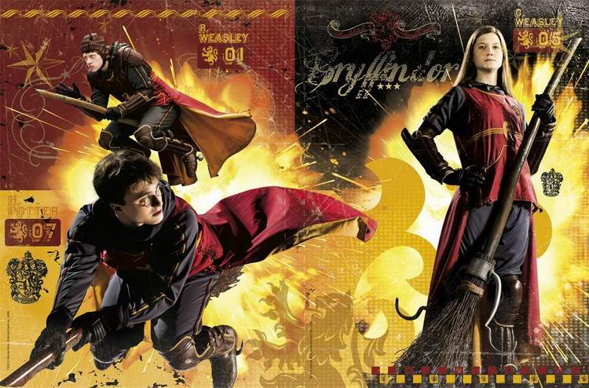
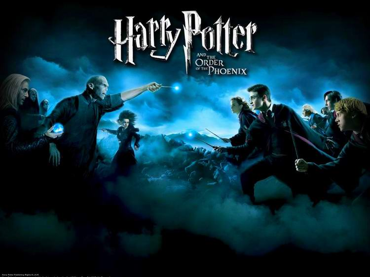
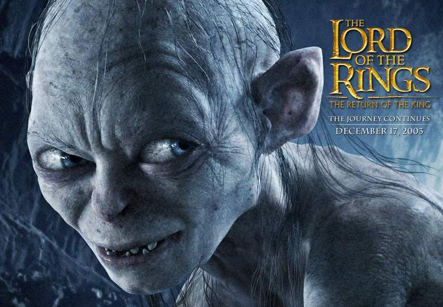
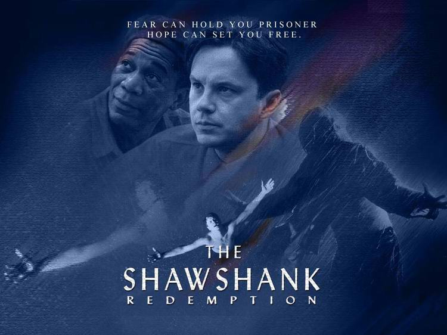

To Watch or Not to Watch...
Films that claim to be spiritual often provoke mixed reactions, especially among people who are seeking spirituality. Here is the view of Irina Gal, an experienced teacher and lecturer.
To watch or not to watch: that is the question...
Author: Irina Gal (mirvnutrinas.ru). Translated from Russian.
Today I want to raise one of the most pressing subjects, one that provokes heated discussions among believers: should children (and not only children) be allowed or forbidden to read and watch the world-famous bestsellers "Harry Potter", "The Chronicles of Narnia", "The Lord of the Rings" and the like? The discussions around these works bring us back again and again to the question of how believers relate to literature, cinema and music.
I think that, first of all, to form the right attitude to a book or a film it is important to know about the author's personality, his ideas and his philosophy of life, which are inseparably bound up with the ideas of his books or films. And these ideas, even when not put into words, will be, hidden or open, the spiritual background of the work that influences people.
The second factor in forming the right attitude is the fruit of the work's influence on a person's soul, on his emotions, decisions and actions.
The Chronicles of Narnia
When I "discovered" The Chronicles of Narnia for myself, I immediately found and read everything I could about the author, and his other works too. I began reading the Chronicles to my children when they were six. The redeeming sacrifice of the Messiah touched my heart with new force every time I read to them about the lion Aslan, his death and resurrection. His kingdom, which is eternal, his self-sacrifice and the images of the heroes of Narnia stirred a desire to be better, gave birth to compassion for the deceived and the weak and a wish to help them rather than to be angry with them and call them dull and stupid.
We reread this book and every time received new revelations. Yes, revelations. It is written: "he that is spiritual judgeth all things" (1 Cor. 2:15). Of course, in the film the personality of the director and the Hollywood approach had their influence, but not so much as to change the moral of the work and its spiritual background. I know some people who, watching the film in the cinema, shouted "Hallelujah!" at the moment the lion rose again.
By the way, all these strange beasts and man-beasts may cause some unease, but that does not mean we should look for demons in every image that has no counterpart in the physical world. What matters is to understand what and who stands behind these images and symbols. (Let us pay attention to the visions and images in Holy Scripture!)
Harry Potter
"Harry Potter" is a book of a completely different spiritual content. Since I know nothing about the author, I shall try briefly to analyse the work itself and its effect on a child. It is written with talent and is gripping. But neither the book nor the film draws a clear line between darkness and light, between what is allowed and what is forbidden. It arouses a desire to penetrate the mystical world, to have supernatural power and might to achieve one's own ends. From there it is not far to an interest in books like "How to Control People", "Mysticism and Power" and so on. Good and evil in "Harry Potter" act by the same methods. Revenge, hatred, spells, curses and love charms (that is, witchcraft) are the motives, ways and means of the "good" heroes as well as the "bad" ones. In other words, the world of light is not there at all; darkness simply disguises itself as light. That is what makes the film dangerous.
Harry becomes the children's idol; for them he is a "positive" hero, the vanquisher of "you-know-who". I would advise parents not to let most children (those who are easily influenced and sensitive) watch this film, since they usually have no spiritual experience and cannot separate the edible from the inedible. And if they do let them, then they should tell them their own view of what is happening.

By the way, as to prohibitions. It is written: "Now I say, That the heir, as long as he is a child, differeth nothing from a servant, though he be lord of all; But is under tutors and governors until the time appointed of the father" (Gal. 4:1–2).
The law is a very important part of a child's life, and one of the chief aims of the law is to teach him to trust and obey his parents and later to trust God. So one must know how to forbid, and how to use the time of the law to put spiritual truths into the child and explain them. "And these words, which I command thee this day, shall be in thine heart: And thou shalt teach them diligently unto thy children, and shalt talk of them when thou sittest in thine house, and when thou walkest by the way, and when thou liest down, and when thou risest up" (Deut. 6:6–7).
Art and the mass media have an extremely strong influence on the formation of people's souls and way of life; they strongly affect feelings and the system of values. The devil uses cinema, theatre, painting and music to legalise sin, to preach openly a sinful way of life as generally accepted and quite natural for modern man. It is like poison: it poisons children's souls and affects their thinking and behaviour. And it does not matter in what quantity the poison is taken; sooner or later it will do its work.
Children who constantly watch secular programmes and films and listen to modern songs take in all these images as patterns of behaviour, idols to imitate.
But neither we nor our children can leave society; we can, however, learn ourselves and teach our children to find their own right direction in life, and that cannot be done by prohibitions alone. Prohibitions must be accompanied by explanations and discussions. To give an antidote to the bad is to help the child build a real relationship with God and to form the spiritual skill of distinguishing good from evil.

At the stage when the child has not yet formed all this, one must check all the programmes and films he watches, all the books he reads, all the pictures and games he looks at on the Internet. Sometimes, by forbidding him to watch and listen to what poisons him, you will help him cope with temptations and not let "the world" influence his thinking.
Read Scripture with him. Discuss (do not condemn!) the behaviour of the heroes of films, their words, actions and desires, comparing them with the Word; pray for the child.
Only do not impose your opinion, do not moralise, do not irritate children with religious pronouncements. If a child is interested in films, loves to read and to listen to music, find him things that are really worthwhile. And by their example show the clear difference in the influence of these films and books on the soul.
For example, my children and I watched "The Shawshank Redemption" three times. We were greatly inspired by the main character, who in hard circumstances went on for many years believing in success and moving towards his goal. We discussed this hero's character in detail and found worthy traits in him.
In the film "A Beautiful Mind" I was struck by the power of true love, of which 1 Corinthians 13 speaks, which helped the main character survive, stand firm, win and achieve success in life.
The Lord of the Rings
And the film "The Lord of the Rings": what a variety of spiritual images and situations! The film by a talented director holds the attention all the way through, and it is no accident that the cruel world of darkness is opposed by the smallest inhabitants of "Middle-earth", who face both strong temptations to use the dark power and serious tests of friendship.

The episodes with Gollum's transformation and split personality, and with the casting out of the dark wizard from the person of one of the kings, are very powerfully done. The film has many symbols and details that are not always caught the first time, but they give the chance to return to it again and again, to notice nuances, and to discuss the actions and characters of the heroes.
What do you talk about with your child? Does he understand that in the spiritual world there is no emptiness and that every physical phenomenon has its beginning in the spiritual world? And do you yourself look in this way at the events of your life and at the processes going on in society, including art and the media? How much time do you yourself spend in front of the television screen, and what do you watch and read? What kind of information do you give priority to in your life?

In 1 Cor. 2:4–5 it is written: "And my speech and my preaching was not with enticing words of man's wisdom, but in demonstration of the Spirit and of power: That your faith should not stand in the wisdom of men, but in the power of God." As we teach our children to love God and to live by His word, it is important that behind our words there should stand a demonstration of the Spirit and of the power of God; otherwise we shall simply raise one more Pharisee.
God created art to show His glory and breathed a creative spirit into man. He did not take us out of the world, but called us to bring His light into the world and to give art back its original purpose. A child who wants to listen to music, watch films, read, draw, go to museums and theatres: that is wonderful. Our task is to lay the right foundations in him: to see everything that happens through the prism of Scripture, spiritually.
It is important for us to teach him to think, reflect, compare and analyse. It is the responsibility of the family and the community to create an environment in which this process in the child's life is built in an atmosphere of truth, on the unsurpassed authority of the Word of God.
 Purim. Holy Laughter
Purim. Holy Laughter Mark Antokolsky. Christ Before the People. Part I
Mark Antokolsky. Christ Before the People. Part I Treasures of Hebrew Words by Victoria Hanna
Treasures of Hebrew Words by Victoria Hanna